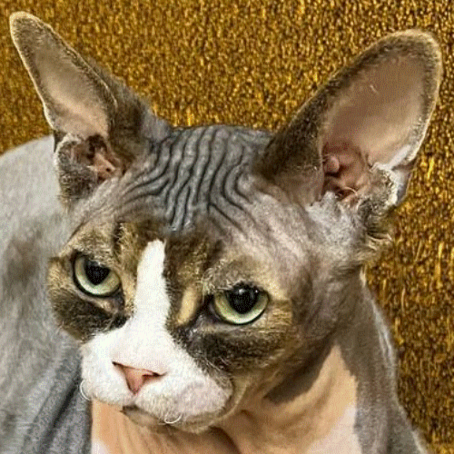

Img - тег для работы с изображением
Атрибуты тега img
src="path"
width="ширина"
alt="description"
style="float:left; margin-right:10px;"
Картинки в разметке, из URL

Вставка локальной картинки

Картинка в блоке див, и текст
Это кот Антона. Антон жил не тужил в городе герое Москва, пока его не клюнул петух в очко. Но как трусливая собака сбежал в Грузию. Сидит там загнивает, пьет вино каждый день, кушает хачапури, устроился на 10 работ, и пытается свести концы с концами. Мечтает о работе в Google, жить в Соединительных Штатах Америки